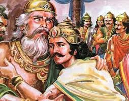

birth of yuyutsu

Fearing problems with Gandhari's pregnancy which had continued for almost two years, Dhritrashtra had a child from Sughada, a woman from Vaishya Varna, who is lady in waiting to Gandhari. Yuyutsu was born at the same time as Duryodhana and Bhima and was elder to Dushasana, other Kauravas and Dussala. Thus, Dhritarashtra had 102 children.
left the kaurava camp
Yuyutsu is celebrated as a moral warrior who chose the path of righteousness, in spite of being born in circumstances that predisposed him to evil. He forwent his family bonds in order to side with dharma. Also, Yuyutsu saved the life of Bhima by informing the Pandavas about Duryodhana's cunning schemes, which included poisoning water. Both Yuyutsu and Vikarna abhorred Duryodhana's conspiracies and evil schemes; however, Vikarna stays loyal to the family and perishes in the war.
kurukshetra war
Before the onset of the battle of Kurukshetra War between Kauravas and Pandavas, Yuyutsu shifts from Kauravas to the Pandava camp. Yuyutsu fought the battle on the side of the Pandavas. He was one among the 11 Maharathis (capable of fighting 720,000 warriors simultaneously) among the Kauravas. Yuyutsu was one among the eleven warriors to have survived the war.
after the war
After the War, he was made the king of Indraprastha. When the Pandavas decided to retire from the world at the start of the Kali Yuga and departure of Krishna, Yudhishthira gave the charge of supervising the kingdom to Yuyutsu while Parikshit was made the king.